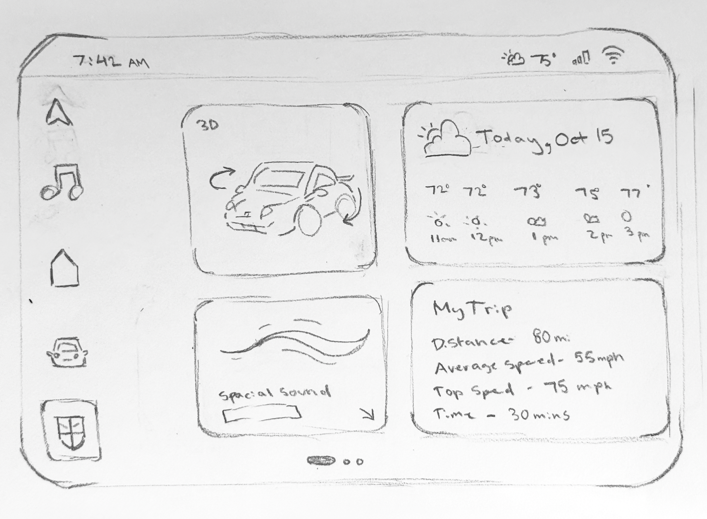
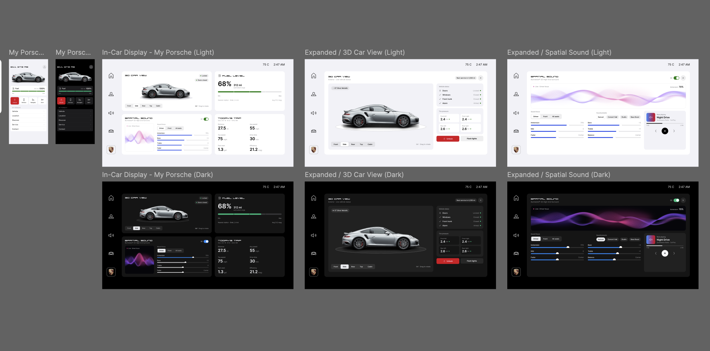
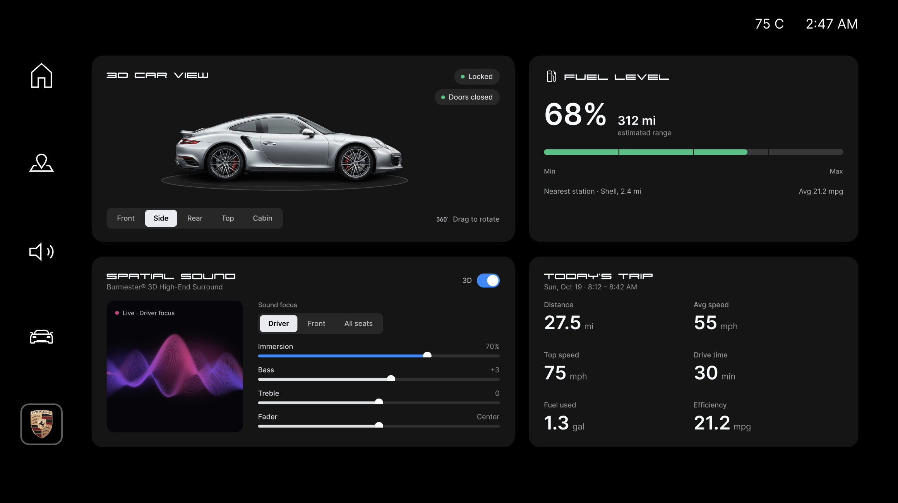
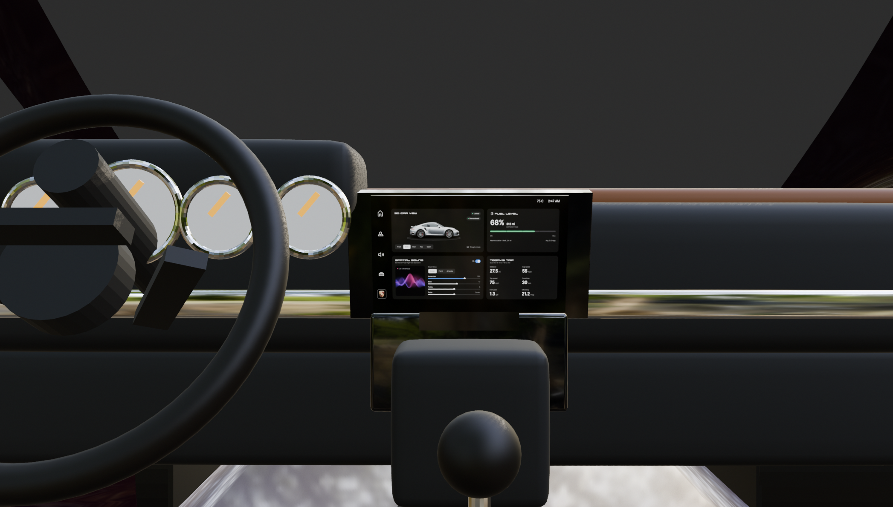

Blender Dashboard
Process

Step 1: Sketch
Sketched a low-fidelity layout of the in-car dashboard.

Step 2: Mockup
Created high-fidelity mockups of the in-car dashboard in Figma, including light and dark modes, with an expanded 3D car view and spatial sound screens.

Step 3: Final Screen
Presented the final dark-mode dashboard screen design.

Step 4: Blender Model
Created a Blender model of the car interior with a blank center screen with help of Claude MCPServer.

Step 5: Final Render
Finalized the render of the car interior with the dashboard screen applied.